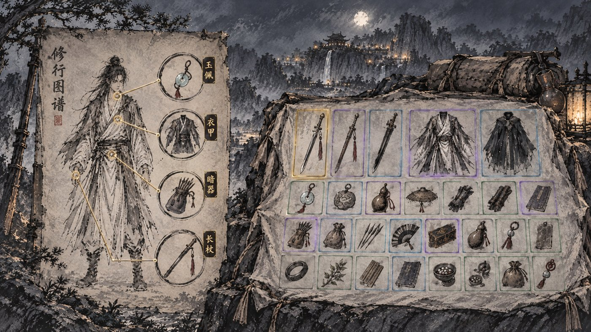
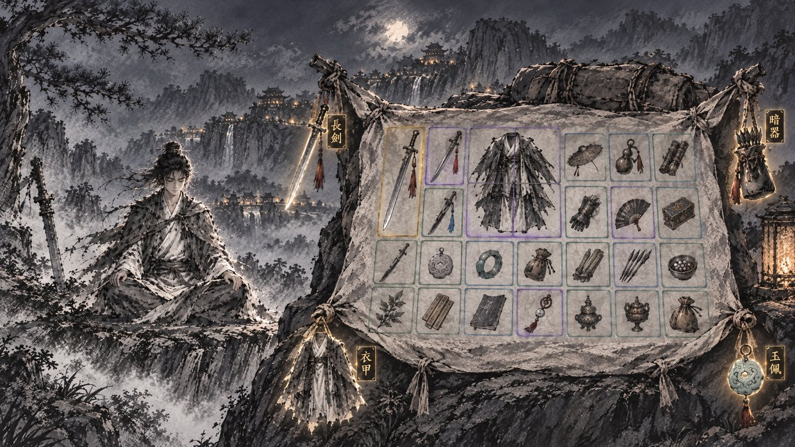
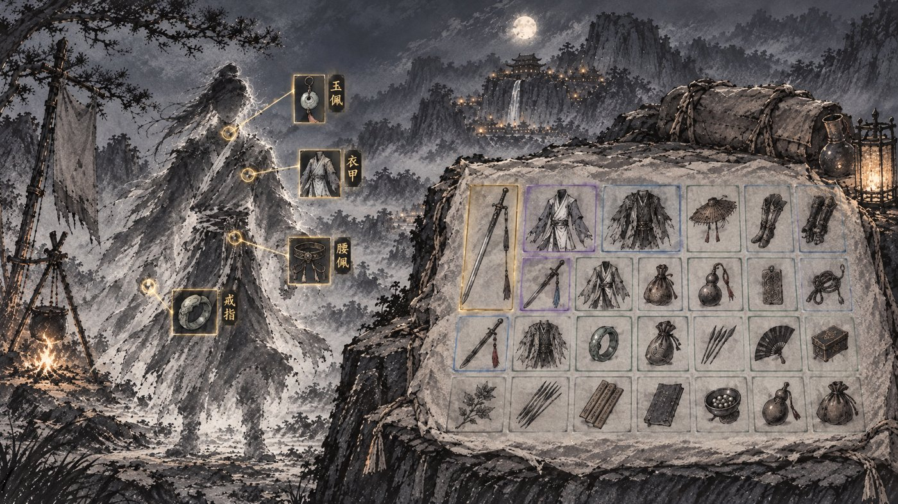
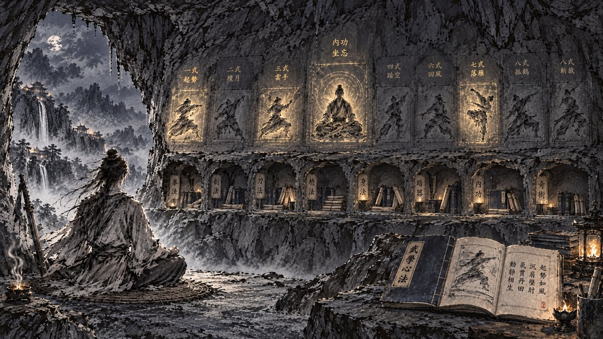
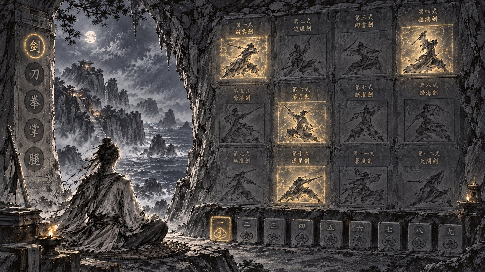
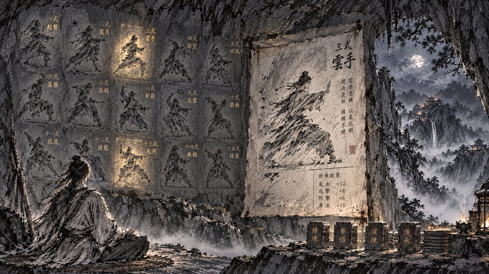

行囊 · 武功 · 方向挑选（第二轮）
三张行囊都以摊开的包袱为主，格边颜色即品阶；区别只在穿戴怎么放。三张武功都是崖洞石壁刻招式；区别在藏书怎么放。图中文字为 AI 随手画，原型里换成真实名字与数值。
行囊 · 包袱为主，穿戴三种放法

丙 · 修行图谱左边一张旧纸图谱，空手人形，四根引线连出四个墨圈，圈里是当前穿戴的图。
人形是固定的「图」不是「人」，换什么兵器都只换圈里的图，不会对不上；纸面和右边包袱是同一种质感。

丁 · 包袱四角包袱四角打结，每个角挂一件穿戴，微微发光。
整页只有包袱一件器物，最简洁；但「穿在身上」的意思弱，四件挂在角上更像另存的东西。

戊 · 雾中人影左边一个雾气凝成、无面目的人影，空手，四处金圈引出四个小框放穿戴。
人影是虚的，不画死兵器，最像修炼页的人物画；小框是代码叠上去的，换装最灵活。
武功 · 崖洞石壁，藏书三种放法

丙 · 壁刻 + 石龛上层石壁刻装配：正中一尊打坐像是主修内功，两侧八式招式像是装配的武学，发金即已装。下层一排石龛按类分（拳、剑、刀……内功），龛里堆着这一类的书，点龛展开选书；右下摊开的书即现在的磁青书页。
装配、藏书、书页三块全有着落，信息量和现在一样。

丁 · 侠客岛石室左边石柱竖刻「剑 刀 拳 掌 腿」切换类别；石壁三行四列刻这一类的武学，已得的清晰、已装的发金、未得的模糊；下面一排九枚方印是装配位。
石壁就是藏书，最「刻在石上」；但书页详情没地方放，要点选后另弹。

戊 · 壁刻 + 拓片左边石壁刻满招式即藏书；右边钉着一张大拓片，是选中那门的详情（大像、口诀、属性）；拓片下一排石印是装配位。
拓片取代磁青书页当详情，和石壁同一套语言；石壁要分类或翻页才能放下几十门。